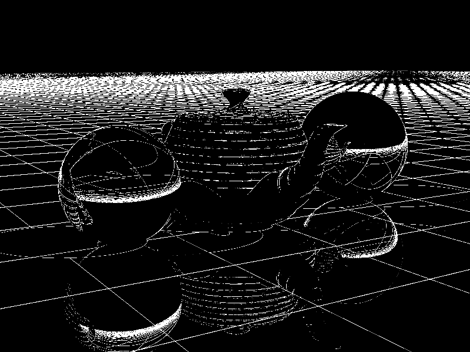
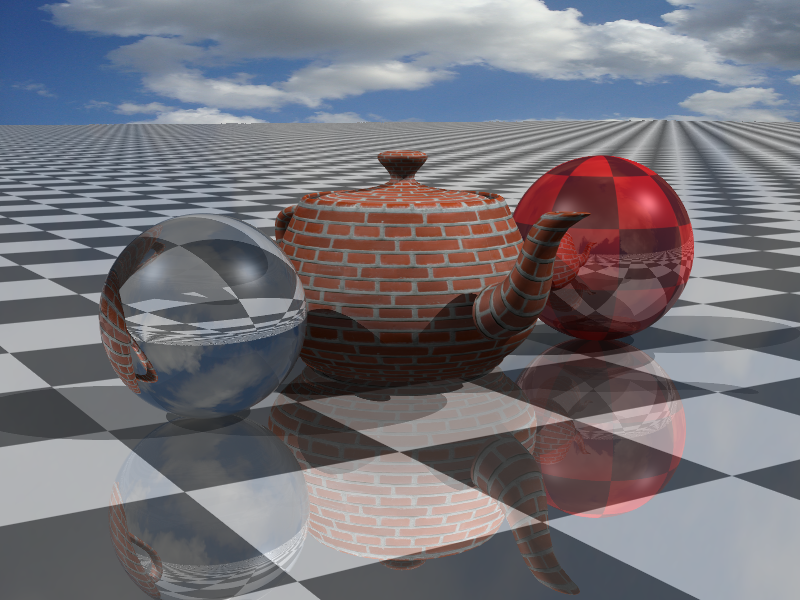
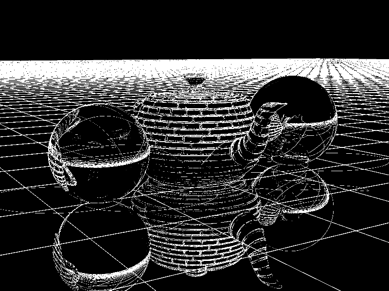

Project 7 - Textures
Render time: (00h 00m 10s) Min:4 Max:16 Threshold: 0.001,with RayDifferentials
Render time: (00h 00m 18s) Min:4 Max:64 Threshold:0.001,with RayDifferentials
Render time: (00h 00m 12s) Min:4 Max:16 Threshold:0.0001,with RayDifferentials
Hardware : Core i7 - 2630QM (2.00GH)
Ram : 6GB